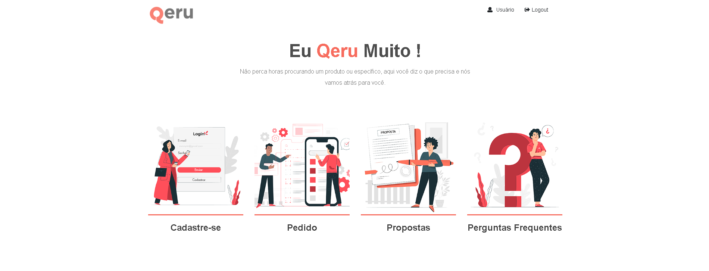
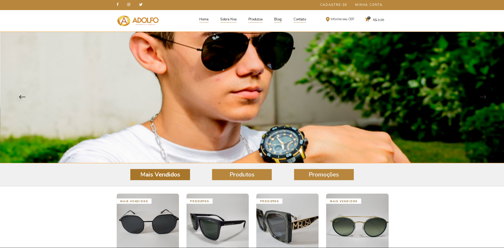
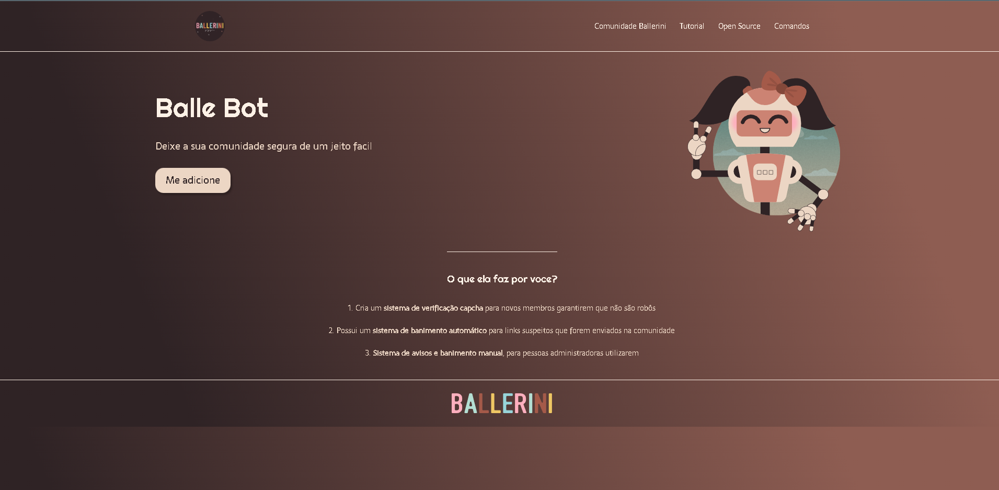

Biosapiens

Saiba mais
Um professora precisava de uma plataforma didática com os conteúdos que ela havia produzido para o seu TCC, fora isso queria utilizar a plataforma também para seus alunos aprenderem via questionários, então a pagina foi montada com um sistema de gameficacão para seus alunos.
QERU
Saiba mais
a QERU é uma plataforma que já esta em sua fase final de desenvolvimento, nela eu aprimorei muito meus conceitos de Git e GitHub como versionar codigo,conhecimento de um framework, bibliotecas entre outros. A Plataforma tem com o objetivo de aproximar lojistas com compradores através de pedidos.
Adolfo
Saiba mais
A Adolfo é um e-commerce onde eu tive meus primeiros contatos com PHP puro e sistemas de estoque. Tambem tive um amplo avanço com o software de edição de imagens o Photoshop, todos as imagens deveriam passar por um tratamento de imagem e eu acabei ficando responsável por isso.
Balle Bot
Saiba mais
Foi um dos meu primeiros projetos feitos por mim, nele eu contei com a video-aula da Rafaella Ballerini, este projeto embora muito simples foi muito importante para mim, afinal foi com a ajuda dele que consegui meu primeiro estagio e alem disso tive a base de conceito que precisava para desenvolver WEB.